Dungeon Mechanisms (Arcane Curiosities Vol.2)
Twelve animated dungeon props for top-down games: spike traps, flame jets, pressure plates, levers, doors, a portcullis, breakable pots and crates, torches and a teleport rune. One-shot actions end on the first frame of the next loop, so they chain without a pop.
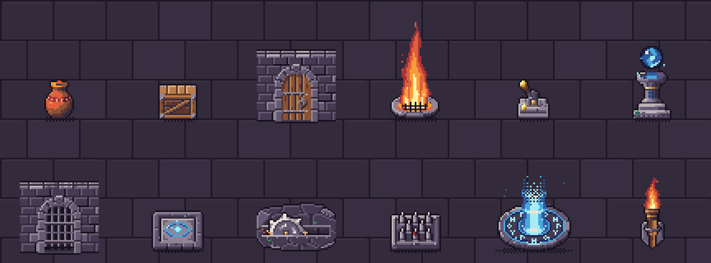
All 12 props · 68 animations
Every prop below is shown at its real frame rate. Sprites are drawn in top-down 3/4 view (key light top-left) at 32–64 px, with one 32-colour palette shared by every Arcane Curiosities volume, so props from different volumes sit together in one scene.
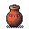
Clay Pot
Terracotta urn: 'hit' wobbles, 'break' shatters into shards and spills coins. Loot, destructible decor.
32×32 px · 4 animations: break (10f, once), broken (8f), hit (6f, once), idle (8f)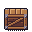
Crate
Supply crate and banded barrel: 'hit' wobbles, 'break' splits into planks. Loot, cover, destructible decor.
32×32 px · 8 animations: break-barrel (10f, once), break (10f, once), broken-barrel (8f), broken (8f), hit-barrel (6f, once), hit (6f, once), idle-barrel (8f), idle (8f)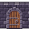
Dungeon Door
Door in a stone arch set in a wall stub, two styles: iron-banded oak and a riveted iron vault door ('-iron'); swings open on its hinge. Rooms, vaults.
48×48 px · 6 animations: closed-iron (8f), closed (8f), open-iron (8f, once), open (8f, once), opened-iron (8f), opened (8f)Flame Jet
Stone vent with an iron grate that 'burst's a tall column of fire (soulfire variant too). Timed hazards, boss rooms.
32×64 px · 4 animations: burst-soul (12f), burst (12f), idle-soul (8f), idle (8f)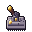
Lever
Floor lever on an iron base in 4 facings; 'pull' swings it over, 'on' lights a brass indicator. Doors, puzzles.
32×32 px · 4 facings · 12 animations: off-down (8f), off-left (8f), off-right (8f), off-up (8f), on-down (8f), on-left (8f), on-right (8f), on-up (8f), pull-down (8f, once), pull-left (8f, once), pull-right (8f, once), pull-up (8f, once)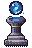
Orb Pedestal
Stone pedestal with a floating orb; 'take' flares it away and leaves the socket 'empty'. Keys, quest items, switches.
32×48 px · 5 animations: empty (8f), idle-green (12f), idle-violet (12f), idle (12f), take (8f, once)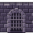
Portcullis
Iron grate in a stone arch that 'raise's into the arch and 'drop's with a bounce. Gates, arenas, boss doors.
48×48 px · 4 animations: closed (8f), drop (6f, once), raise (10f, once), raised (8f)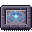
Pressure Plate
Stone floor plate with a carved rune; sinks on 'press' and the rune lights. Puzzle triggers, trap triggers.
32×32 px · 5 animations: down-violet (8f), down (8f), press (6f, once), release (6f, once), up (8f)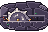
Saw Trap
Spinning saw blade in a floor groove: 'spin', 'travel' end to end, 'hidden', 'emerge'. Hazards, gauntlets.
48×32 px · 4 animations: emerge (6f, once), hidden (8f), spin (8f), travel (16f)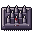
Spike Trap
Iron floor plate with holes; spikes shoot up on 'trigger', stay 'armed', and 'retract'. Dungeon floors, hazards.
32×32 px · 4 animations: armed (8f), idle (8f), retract (6f, once), trigger (8f, once)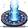
Teleport Rune
Rune circle in flagstones: 'dormant', 'activate' (glow races round, light column), 'active'. Teleporters, save points.
48×48 px · 6 animations: activate-violet (10f, once), activate (10f, once), active-violet (12f), active (12f), dormant-violet (12f), dormant (12f)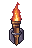
Wall Torch
Iron sconce with a torch (fire, soulfire, witchfire, bilefire); 'ignite' lights it. Corridors (hang on a wall).
32×48 px · 6 animations: ignite (8f, once), lit-bile (12f), lit-fire (12f), lit-soul (12f), lit-witch (12f), unlit (8f)What's in the ZIP
PNG sprite sheets with frame JSON (anchor at the feet), GIF previews, the palette (.gpl, .hex, .png), a Godot 4 project with a SpriteFrames resource and scene per prop plus a demo scene, catalog.json and SKILL.md for AI coding agents. Commercial use in your games is allowed; reselling or redistributing the art as assets is not.